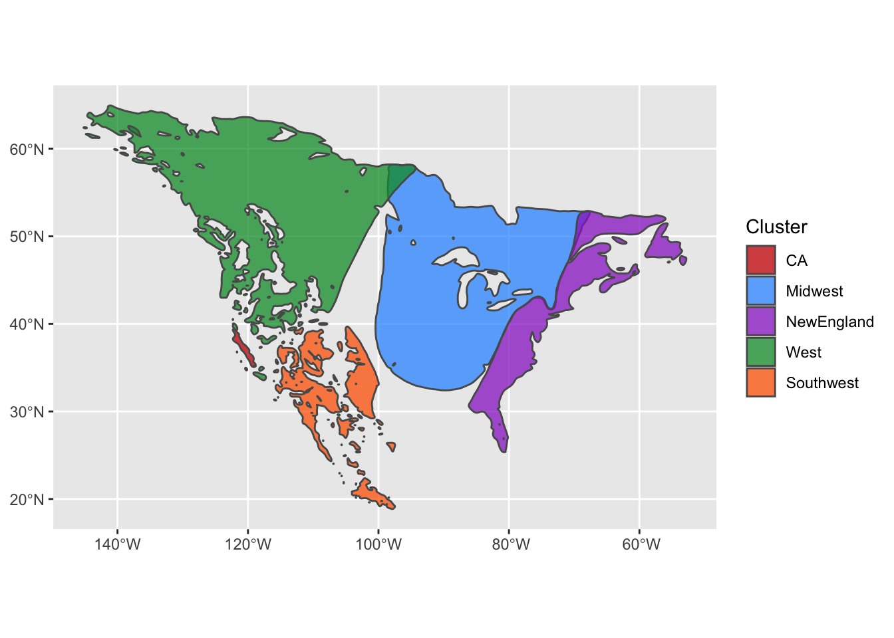

Chapter 2 Breeding nodes
Breeding nodes are delineated by the genetically distinct populations on the breeding grounds. In this example, we’ll show how to use eBird Status and Trends data to specify the breeding range and then use genetic data from admixture analyses to specify the spatial extent of the breeding nodes.
2.1 ebirdst
In the migratory network analyses, the ebirdst abundance data is used to delineate the different stages of the annual cycle. The MuSpTest package provides code for these first sections that function as a wrapper for the ebirdst package to streamline the process. If you would like to know more about the underlying ebirdst code and analyses, check out the excellent tutorial by Strimas-Mackey, Auer, and Fink.
Prior to doing anything with eBird Status and Trends data, you will need to download the ebirdst package, and then get access to the data. To download the package:
# install.packages("remotes")
remotes::install_github("CornellLabofOrnithology/ebirdst")Then, get access to ebirdst data at https://ebird.org/st/request. You will receive a key to download ebirdst data and you can enter that key in R:
ebirdst::set_ebirdst_access_key("XXXXX")where "XXXXX" is the key.
The primary packages for this vignette are:
library(MuSpTest)
library(sf)
library(terra)
library(tidyverse)
library(ebirdst)
library(rnaturalearth)2.2 Seasonal abundance
The first function, get_ebirdst_abd_season(), downloads species data and creates a multi-layered raster of seasonal abundance data (nonbreeding, prebreeding migration, breeding, and postbreeding migration). The function currently takes two inputs, species and path. ebirdst data download is based on the six-letter species code, thus, we use the same naming system. You can find the specific codes with the get_species function from the ebirdst package.
Specify the species of interest for get_ebirdst_abd_season() with species. path specifies the output path for the single multi-layered raster file that is produced, with the default being the current directory. If you want to output to another directory, make sure that directory is already created. The output naming convention for the raster is “[species code].abd_season.tif.”
Below is an example for downloading data for the Common Yellowthroat and creating the seasonal abundance raster stack.
# This can take a while depending on the species (5-10 min.)
abd_season <- get_ebirdst_abd_season(species = "comyel", path = "./comyel/")2.3 Generating seasonal polygons
Using the previously created seasonal abundance rasters, we will convert them to polygons of the range. The details can be found in the ebirdst tutorial, but the gist of it is that we’ll distinguish non-zero abundance from non-predicted areas, and delineate nice smooth ranges for the different stages.
We also need land extent data. We will get land data from the rnaturalearth package using the following code. Depending on the organism’s range, you will need to filter continent to the appropriate region. Here, we want both North and South America.
ne_scale <- 50
# land polygon
ne_land <- rnaturalearth::ne_countries(scale = ne_scale, returnclass = "sf") %>%
dplyr::filter(continent %in% c("North America", "South America")) %>%
sf::st_set_precision(1e6) %>%
sf::st_union() %>%
sf::st_geometry()
ne_land_proj <- sf::st_transform(ne_land, crs = sf::st_crs(abd_season))Now we have all the input data we need to get the polygons of the range. The function range_smooth() in the MuSpTest package takes care of this. In the process of smoothing the polygon, small regions are dropped and holes in the polygon filled in based on the size (\(km^2\)) specified with the smooth_area parameter. Below it is set at 1000 \(km^2\) (e.g. a 31.6 km * 31.6 km square), but you may want to increase or decrease depending on the organism.
# this fuction can take a while (~10 min.)
comyel_range_smooth <- range_smooth(abd_season = abd_season,
path = "./comyel/shapefiles",
filename = "range_smooth",
ne_land = ne_land_proj,
smooth_area = 1000,
split_migration = FALSE,
show_yearround = FALSE)Extracting a single polygon of a portion of the range is simple and quick! Here’s an example of getting the breeding season range from the range_smooth() output.
comyel_breed_smooth <- dplyr::filter(comyel_range_smooth,
season == "breeding") %>%
sf::st_transform(crs = 4326)
sf::st_write(comyel_breed_smooth, dsn = './comyel/shapefiles',
layer = "comyel_breed_smooth",
driver = "ESRI Shapefile")2.4 Creating the genoscape
This is modified from Eric Anderson’s Github project that uses a matrix of individual Q-values to create a rasters of genetically distinct clusters - the genoscape. If you want to learn the ins and outs of making a beautiful genoscape map, check out Eric’s awesome tutorial. We will use the breeding polygon created in the previous step to specify the breeding range for the genoscape. The input data we need are:
- Individual Q-value matrix
- Lat/lon matrix of individual
- Breeding range polygon
The comyel_assignment data set provides admixture results (Q-values) of five genotype clusters for Common Yellowthroat (cite a coye paper) and metadata for the sampled individuals.
Q_matrix <- MuSpTest::comyel_assignment %>%
dplyr::select(CA, Midwest, NewEngland, West, Southwest) %>%
as.matrix()
long_lat_matrix <- MuSpTest::comyel_assignment %>%
dplyr::select(Long, Lat) %>%
as.matrix()
cluster_colors <- c(
CA = "#CC0000",
Midwest = "#3399FF",
NewEngland = "#9933CC",
West = "#009933",
Southwest = "#FF6600") We will use a modified version of the tess3r package to create the genoscape rasters.
# remotes::install_github("eriqande/TESS3_encho_sen")
genoscape_brick <- tess3r::tess3Q_map_rasters(
x = Q_matrix,
coord = long_lat_matrix,
map.polygon = breed_smooth,
window = terra::ext(breed_smooth)[1:4],
resolution = c(300,300), # if you want more cells in your raster, set higher
col.palette = tess3r::CreatePalette(cluster_colors, length(cluster_colors)),
method = "map.max",
interpol = tess3r::FieldsKrigModel(10),
main = "Ancestry coefficients",
xlab = "Longitude",
ylab = "Latitude",
cex = .4
)
names(genoscape_brick) <- colnames(Q_matrix)
out.files <- paste0("./comyel/genoscape/comyel_genoscape_cluster_", names(genoscape_brick), ".tif")
terra::writeRaster(terra::rast(genoscape_brick), filename = out.files)2.5 Genoscape polygons
Using the genoscape rasters we will convert them to polygons, using the handy scape_to_shape() function. The prob_threshold parameter specifies the value to determine if a raster cell is included in the polygon for that genoscape. This value should be customized for different species to check for overlap of genoscape polygons, which is not desirable. Setting too high of a threshold will create very small breeding nodes, while too low of a threshold will result in large, overlapping breeding nodes.
genoscape_files <- list.files("./comyel/genoscape",
full.names = T,
pattern = "*.tif")
genoscape_raster_stack <- terra::rast(genoscape_files)
genoscape_polygon_sf <- scape_to_shape(x = genoscape_raster_stack, prob_threshold = 0.5)Check out the polygons
ggplot() +
geom_sf(data = genoscape_polygon_sf,alpha = 0.75, aes(fill = Cluster)) +
scale_fill_manual(values = cluster_colors)
Check which polygons are overlapping. Each row of the output provides a pair of overlapping polygons (if there are any).
check_genoscape_overlap(genoscape_polygon_sf)## [,1] [,2]
## [1,] "CA" "West"
## [2,] "Midwest" "NewEngland"
## [3,] "Midwest" "West"